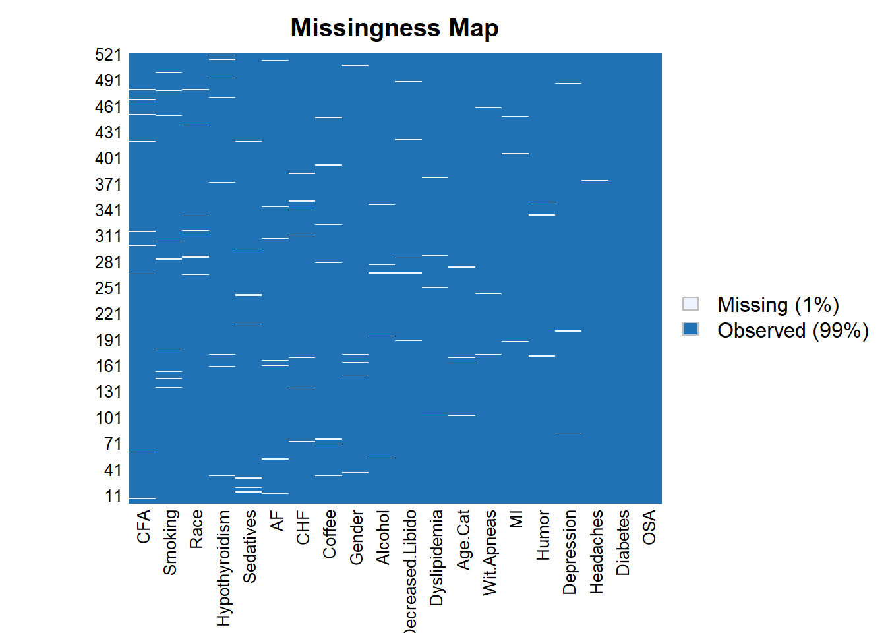
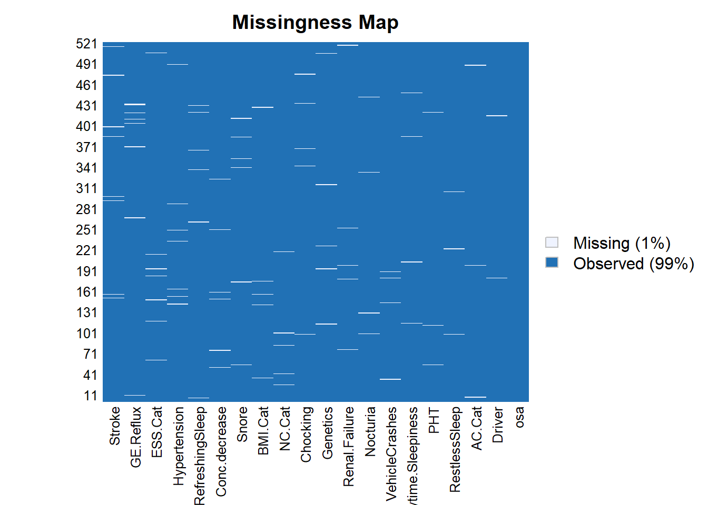

3 Results
In this study we analysed a total of 521 subjects, from those 325 (62.38%) are male, and 355 (68.14%) have OSA.
When we analysed missing data (Figure 3.1) we do not found any variable with an excessive number of missing values.

Figure 3.1: Missing values for each variable 1/2

Figure 3.2: Missing values for each variable 2/2